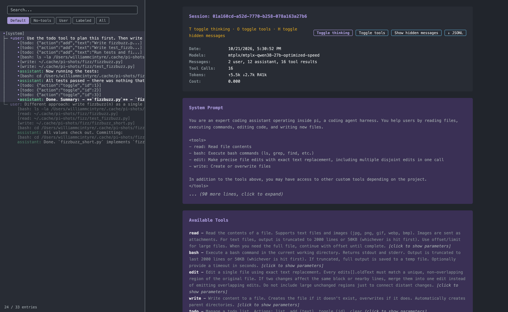
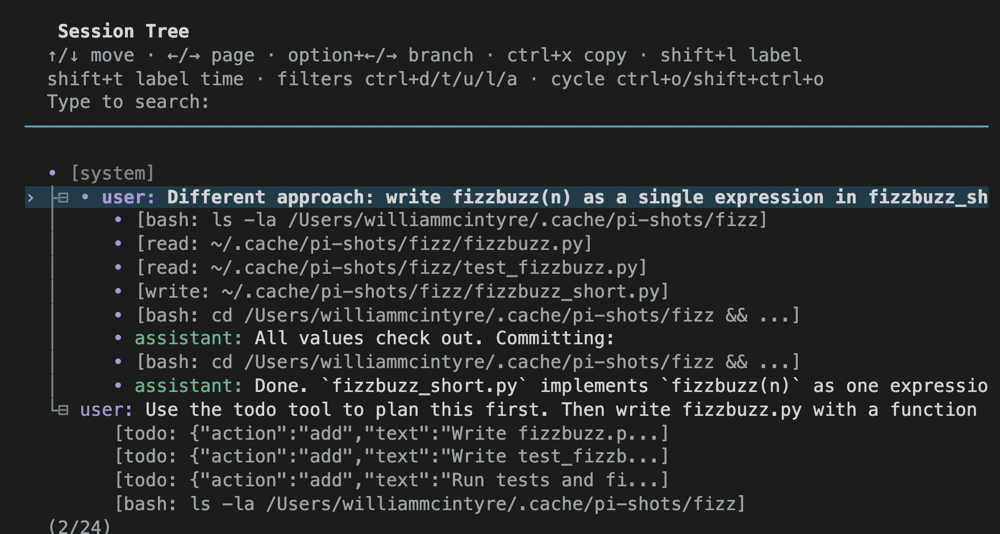
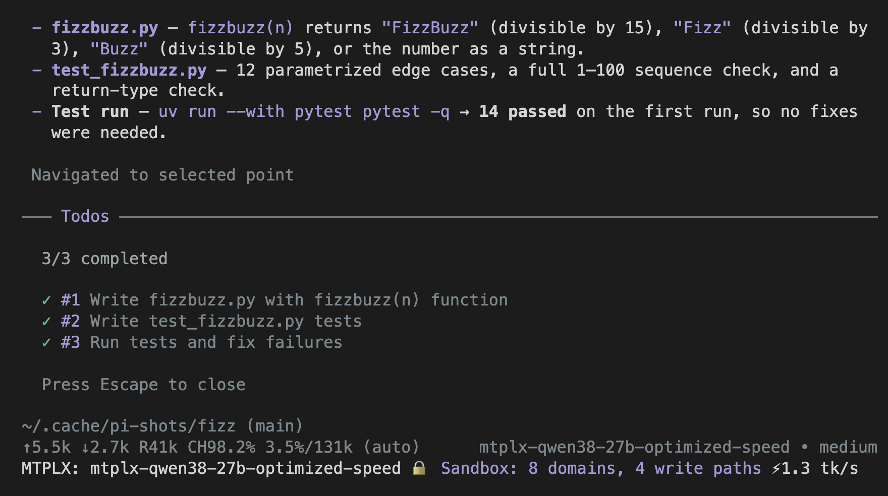
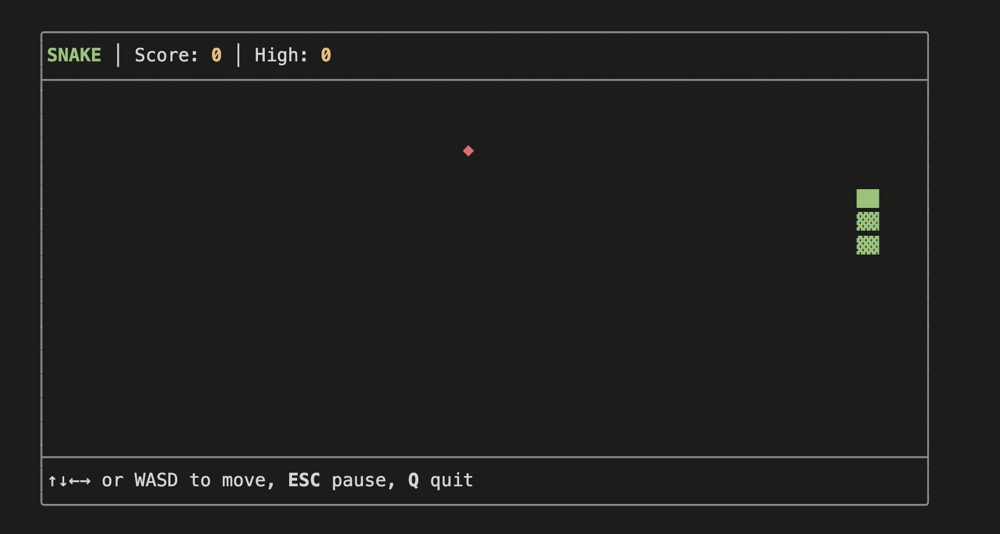

Customizing pi

/export session.html · /share
One HTML file: the session tree, every tool call, token counts, even pi’s full system prompt. /share gives you a link.

/tree
Jump back to any step and try another way. Both branches stay.

pi -e …/todo.ts · /todos
The model keeps a to-do list as it works, and it follows your branches.

pi -e …/snake.ts · /snake
Space Invaders and DOOM too. titlebar-spinner.ts spins in the tab title while it works.
Examples ship with pi: $(npm root -g)/@earendil-works/pi-coding-agent/examples/extensions. Screenshots from a real session, pi 1.3.0 on MTPLX, 21 October 2026.
No. 13